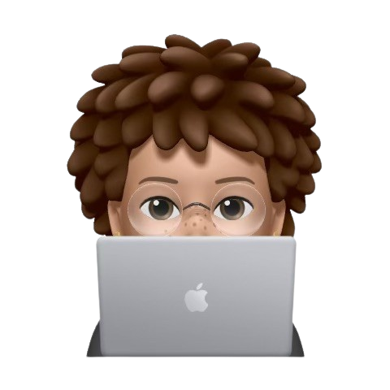

4-6 mois · Réseaux & Systèmes · Février 2026

Spécialisée en développement web, infrastructure cloud, containerisation et automatisation. Je créer des solutions robustes et scalables.
Étudiante en informatique passionnée par le développement web et les infrastructures DevOps. J'ai une solide expérience en développement FullStack avec des technologies modernes comme Spring Boot, Angular et Docker.
Mon HomeLab me permet d'expérimenter quotidiennement avec des outils DevOps professionnels : containerisation, monitoring, automatisation et CI/CD. Je suis constamment à la recherche de nouveaux défis techniques pour perfectionner mes compétences.
Découvrez mon parcours complet, mes expériences professionnelles et mes compétences techniques.
Télécharger mon CVWindows WSL / Docker / Monitoring / Automatisation
Création d'un HomeLab DevOps complet avec PostgreSQL, Pi-hole, Grafana, Prometheus et monitoring avancé des services containerisés.
GardeMaLicorne (Tallard, France)
Maintenance et création d'interfaces web, intégration de maquettes, utilisation de Symfony (Twig, Doctrine ORM), SCSS et JavaScript.
Je suis toujours intéressée par de nouvelles opportunités, collaborations et projets challengeants. N'hésitez pas à me contacter !